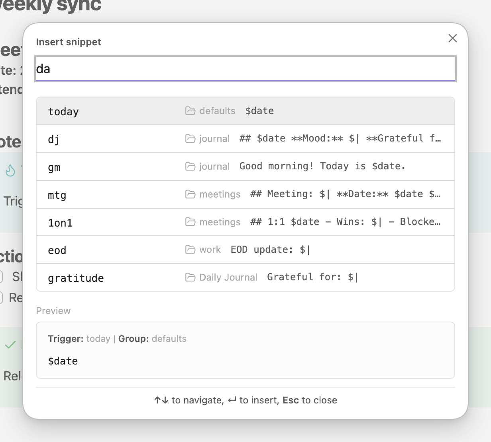
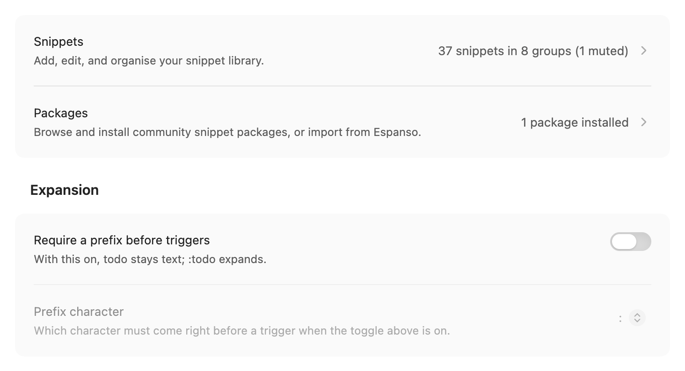
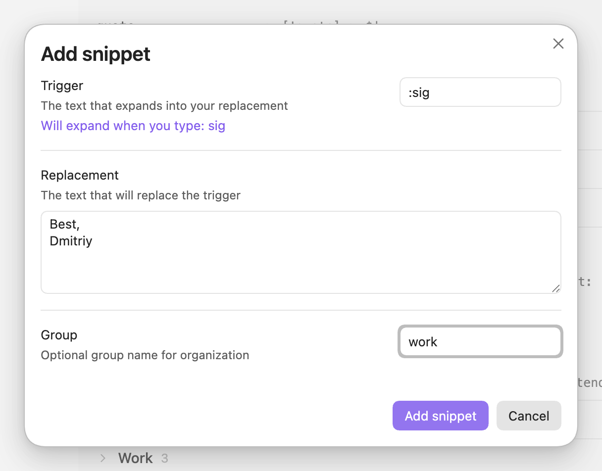
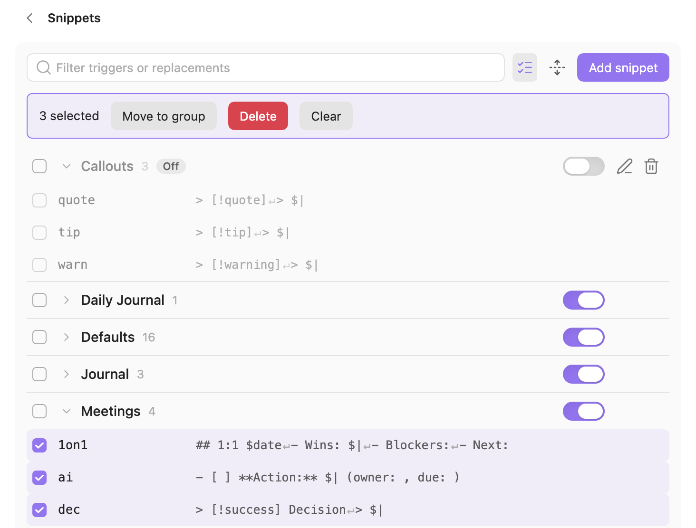
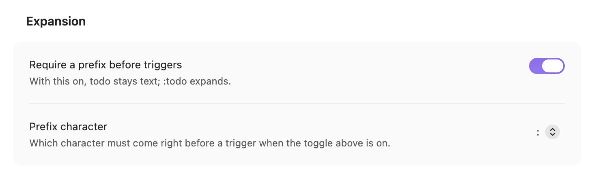
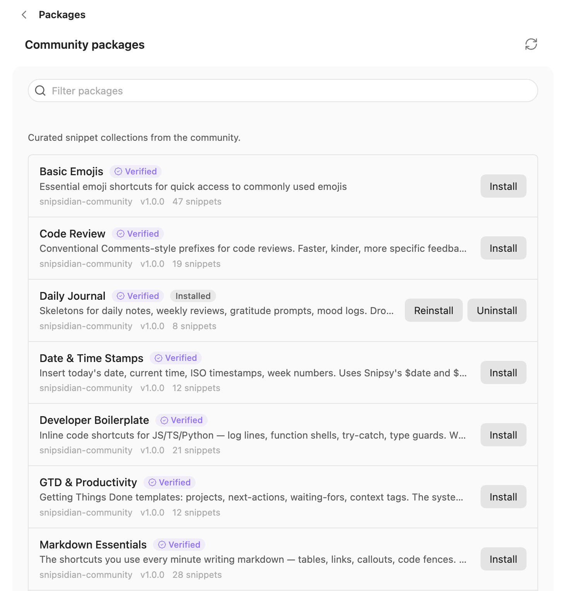
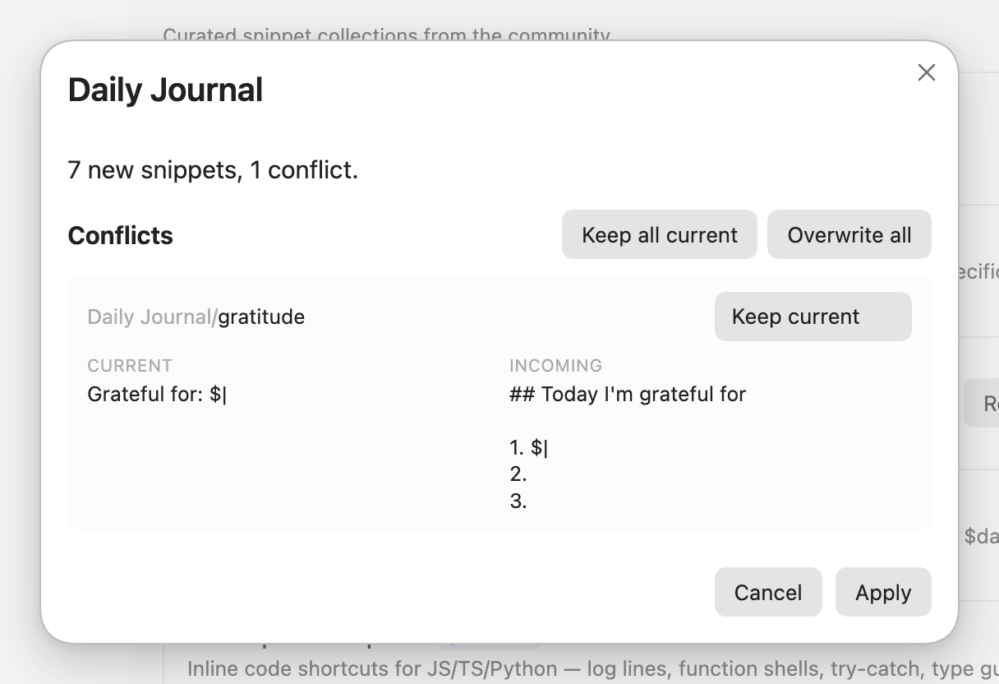
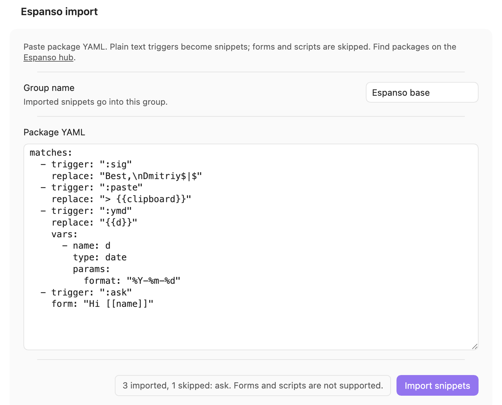

Snipsy
snipsidianType todo and a space, get - [ ]. Hotstrings for Obsidian, markdown-aware, no scripting.
A trigger expands when a separator lands after it. The separator stays where you typed it, and the caret goes where the snippet says.
What is in it
:todo expands, plain todo stays a word
Community catalogTwelve packs, one click each, preview before writing
Espanso importPaste a .yml, see what came across and what did not
Not in fenced code, not in inline code, not in frontmatter, not in the middle of a word. Only real typing expands: a paste, an undo or another plugin's edit never does. The full list.
Install
Snipsy is in Obsidian's community plugin catalog.
- Settings›Community plugins›Browse
- Search for Snipsy, then Install and Enable.
- Open any note, type
todoand a space. The line becomes- [ ]with the caret after it.
Insert snippet…
For a snippet whose trigger you do not remember, run Snipsy: Insert snippet… from the command palette (Ctrl/Cmd P). It searches your triggers and shows the whole expansion before you pick one. With text selected, the same picker opens as Wrap selection.
- Snipsy: Insert snippet…
- Snipsy: Open settings
- note(Defaults)> [!note] ↵ >
- now(Defaults)$time
> [!note] >
A sketch of the picker: the query, the matching triggers with their group, and a preview of the one under the cursor. Command id insert-snippet.

A hotkey
The second command, Snipsy: Open settings, opens the plugin's settings tab. To put a key on either one, go to Settings›Hotkeys and search for "snipsy". Or use Set hotkey for Insert snippet in Snipsy's settings: it opens that screen with the search already filled in.
On Obsidian 1.13 and later the settings are native: Snippets and Packages open as pages, everything else sits on the Snipsy settings screen, and Obsidian's settings search finds them. Older Obsidian shows the same settings as Snippets, Packages, General and About tabs.

Sixteen defaults, one group
A fresh install comes with these, all in one group called Defaults. marks where the caret lands, ↵ is a line break.
brb→be right back
omw→on my way
ty→thank you
imo→in my opinion
h1→#
h2→##
h3→###
todo→- [ ]
done→- [x]
bold→****
italic→__
code→``
note→> [!note]↵>
table→| H1 | H2 | H3 |↵| --- | --- | --- |↵
| | | |
today→$dateYYYY-MM-DD
now→$timeHH:MM
Delete the group and the defaults stay deleted, through restarts and updates. Settings›Snipsy›Restore default snippets brings back the missing ones and leaves yours alone: a trigger that already exists in any group is skipped.
Your first snippet
- Settings›Snipsy›Snippets›Add snippet
- Trigger:
sig. The dialog answers under the field: Will expand when you type: sig. - Replacement: two lines,
Best,and your name. Save. - In a note, type
sigand a space.
trigger: sig
replacement: |
Best,
DmitriyThe two fields above are what you fill in; the dialog is a form, not YAML. The caret ends up after the last character, with the space you typed still after it.

Placeholders
A replacement is plain text with a few words that fill in when it expands.
$| where the caret lands. Without it, the caret goes after the text.$date today, as YYYY-MM-DD.$time the time now, as HH:MM.$filename the name of the note you are typing in.$clipboard what is on the clipboard, read at the moment the snippet expands.$1 the selected text, when you wrap a selection through Insert snippet….## $filename, $date $time
- $|$1 and $2 are not Tab-stopsSnipsy has one caret position per snippet. Pressing Tab after an expansion does not jump to a next field. $1 only means "the selection" when you wrap one.
Groups
Every snippet lives in a group. The defaults are one, and each pack or import you add gets its own.
- The toggle on a group header mutes the whole group: its triggers stop expanding and leave the picker. The group stays in the list, dimmed, and you can still edit it.
- Select several snippets to move or delete them together.
- Deleting asks first, and names the first five triggers it is about to remove.

How expansion works
A trigger expands when a separator lands right after it. These count as separators:
.,!?;:()[]{}"'The separator stays where you typed it. Type brb and a comma, and you get be right back,. A snippet that spans lines puts the caret on the line it names, so note leaves you inside the callout, ready to write.
brb,→be right back,
note␣→> [!note]↵> ␣
Where it stays quiet
Snipsy never expands:
- inside a fenced code block
- inside inline code
- in YAML frontmatter
- in the middle of a word:
photodois left alone
Since 1.3.0 only real typing triggers it. None of these expand, even when they end in a trigger:
- a paste
- undo and redo
- drag and drop
- another plugin's edit
- IME composition, so Chinese, Japanese and Korean input works as usual
Press undo right after an expansion and it takes back the trigger and the expansion together, in one step.
Prefix mode
For writers who kept getting now and today expanded in the middle of a sentence. In Settings›Snipsy›Expansion, turn on Require a prefix before triggers and pick : or ;.
todo␣→todo␣stays a word
:todo␣→- [ ] ␣
The prefix is consumed: it does not stay in the note. It is one switch for every trigger, and it is off by default.

Community catalog
Settings›Packages lists ready-made packs from the catalog repository. One click installs a pack into its own group; uninstalling deletes that group.
Reinstall a pack whose snippets you have edited, and a preview asks before anything is written: keep yours, or overwrite it. A pack that wants a trigger used by a different snippet in another group is not installed, and the notice names the trigger. The list is cached for 24 hours, and works offline from that cache.
Have a set worth sharing? Submit it from the plugin, and Snipsy opens a GitHub issue with it already filled in.


Espanso import
Paste an Espanso .yml, from hub.espanso.org or your own config, name the group, and press Import snippets.
matches:
- trigger: ":sig"
replace: "Best,\nDmitriy$|$"
- trigger: ":paste"
replace: "> {{clipboard}}"
- trigger: ":ymd"
replace: "{{d}}"
vars:
- name: d
type: date
params:
format: "%Y-%m-%d"
- trigger: ":ask"
form: "Hi [[name]]"sig→Best,↵Dmitriy$|
paste→> $clipboard
ymd→$date
3 imported, 1 skipped: ask, followed by why.
$|$ becomes $|, {{clipboard}} becomes $clipboard, and a plain date variable becomes $date or $time. Forms, scripts, shell commands, regex triggers and images have no Snipsy equivalent. They are skipped and listed by name, instead of arriving broken. The same size limits apply as for a catalog install.

Backup
Export snippets and Import snippets in Snipsy's settings move your snippets as one JSON file. On mobile, export writes snipsidian-snippets.json to the root of the vault, and falls back to the clipboard when it cannot.
Privacy
Snipsy works offline. Everything it keeps is in one file: .obsidian/plugins/snipsidian/data.json.
Both happen on the Packages page:api.github.com for the list of packs, raw.githubusercontent.com to download the one you install. No analytics, no telemetry, no account.
$clipboard reads the clipboard only when a snippet containing it expands. None of the defaults use it.
What it leaves out
Snipsy replaces a word with text. It does not do these, by design:
- templates with JavaScript (see Templater)
- expansion outside Obsidian, in every app (see Espanso)
- a snippet library you search but never type (see Snippets Manager)
- Tab-stops that jump from field to field
- scripting of any kind
If one of these stops you, say what you tried.
Questions
Does it work on my phone?
Yes. The plugin is not desktop-only. Triggers expand on mobile the same way.
Will it fire in my code blocks?
No. Fenced code, inline code and frontmatter are left alone. Where it stays quiet.
now keeps expanding in my sentences
Three ways out. Delete that one snippet. Mute the whole Defaults group with its toggle. Or turn on prefix mode, and only :now expands.
Does it send my text anywhere?
No. Your snippets stay in data.json in your vault. The only network traffic is the pack list and pack downloads on the Packages page. Privacy.
Can I bring my Espanso snippets?
Yes. Paste the .yml. What Snipsy can map comes across, and what it cannot is listed by name. Espanso import.
How do I report a bug?
Open an issue on the issue tracker. Your Obsidian version, your OS and the trigger involved help the most.
Also by the author: Dashy
A dashboard inside an Obsidian note, built from six markdown blocks: tiles, number cards, progress bars, countdowns and a year heatmap. A few lines of YAML each. No JavaScript, no Dataview.
Snipsy is free and made by one developer. A star on GitHub tells others the plugin is worth a look, and a coffee is a way to say thanks.